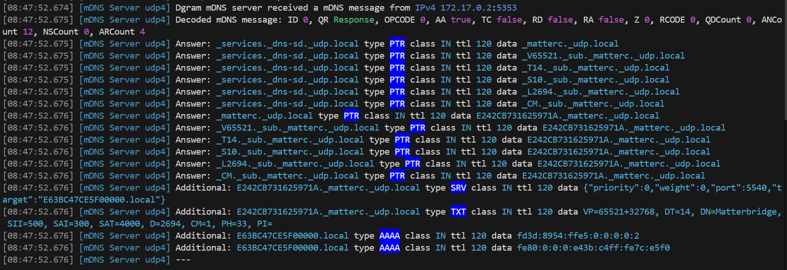

This project aims to use Matterbridge in these configurations:
| Docker type | Docker network | OS | Ipv4 | Ipv6 | Share (3) | Home Assistant | Matter Server |
|---|---|---|---|---|---|---|---|
| Docker Desktop | bridge (1) | Windows | ✅ | ✅ | ✅ | ✅ | ✅ |
| Docker Desktop | bridge (1) | macOS | ✅ | ✅ | ✅ | ✅ | ✅ |
| Docker Engine | bridge (2) | Linux | ✅ | ✅ | ✅ | ✅ | ✅ |
(1) - Network host in this configuration is useless cause Docker runs inside a VM.
(2) - Network host in this configuration works already out of the box cause Docker runs on the host.
(3) - Share mDNS between separate containers.
It can also be used to run Home Assistant and Matter Server inside Docker Desktop on Windows and macOS (with network bridge) without using complex VM. You just copy paste the docker-compose.yml.
See Docker Desktop docs.
We use named volumes for storage, plugins and mattercert.
We publish the default matterbridge frontend port 8283.
We publish the matter port range 5550-5559 to allow childbridge mode and server node devices (RVCs).
macOS
docker stop matterbridge-test
docker rm matterbridge-test
docker pull luligu/matterbridge:dev
docker run -dit --restart unless-stopped --name matterbridge-test \
-p 8283:8283 -p 5550-5559:5550-5559/udp \
-v storage:/root/.matterbridge -v plugins:/root/Matterbridge -v mattercert:/root/.mattercert \
luligu/matterbridge:dev matterbridge --docker --frontend 8283 --port 5550
docker logs --tail 1000 -f matterbridge-test
powerShell
docker stop matterbridge-test
docker rm matterbridge-test
docker pull luligu/matterbridge:dev
docker run -dit --restart unless-stopped --name matterbridge-test `
-p 8283:8283 -p 5550-5559:5550-5559/udp `
-v storage:/root/.matterbridge -v plugins:/root/Matterbridge -v mattercert:/root/.mattercert `
luligu/matterbridge:dev matterbridge --docker --frontend 8283 --port 5550
docker logs --tail 1000 -f matterbridge-test
You will see that the frontend inside the container is listening on the conainer address
[09:02:10.140] [Frontend] The frontend http server is listening on http://172.17.0.2:8283
[09:02:10.140] [Frontend] The frontend http server is listening on http://[fd3d:8954:ffe5::2]:8283
But since we mapped the port 8283:
the frontend is available on the host with localhost:8283,
the frontend is available on the lan with
In the same way the Matter port range 5550-5559 is mapped outside the container to allow the controllers on the lan to discover and connect.
From another terminal run mb_mdns inside the container we created and run before
docker exec -it matterbridge-test mb_mdns --no-timeout
In a while you will see what mDNS packets are advertised inside the container

From another terminal run ip a and ip r inside the container we created and run before
docker exec -it matterbridge-test apt-get update
docker exec -it matterbridge-test apt-get install -y --no-install-recommends iproute2 iputils-ping net-tools dnsutils tcpdump netcat-openbsd
docker exec -it matterbridge-test ip a
docker exec -it matterbridge-test ip r
The advertised mDNS packets cannot reach the host and the lan cause mDNS are not routed inside Docker Desktop
The advertised mDNS packets contain wrong A and AAAA records:
npm install -g matterbridge@dev
mb_mdns --reflector-server --log-reflector-messages --localhost --share-with-clients
In a while you will see

docker stop matterbridge-reflector
docker rm matterbridge-reflector
docker pull luligu/reflector-client:latest
docker run -dit --restart unless-stopped --name matterbridge-reflector luligu/reflector-client:latest
docker logs --tail 1000 -f matterbridge-reflector
In a while you will see

To test the sharing feature (it shares mDNS between all reflector clients), use the docker-compose.yml in the docker-reflector directory.
With this configuration Home Assistant (with Matter Server) works inside a Docker Desktop container without network host. When asked by Home Assistant, connect to Matter Server with ws://matterserver:5580/ws
docker compose pull
docker compose down
docker compose up -d --force-recreate
You need the Matterbridge reflector server running on the host from the tutorial above.
docker logs --tail 1000 -f mb_mdns
docker logs --tail 1000 -f reflector